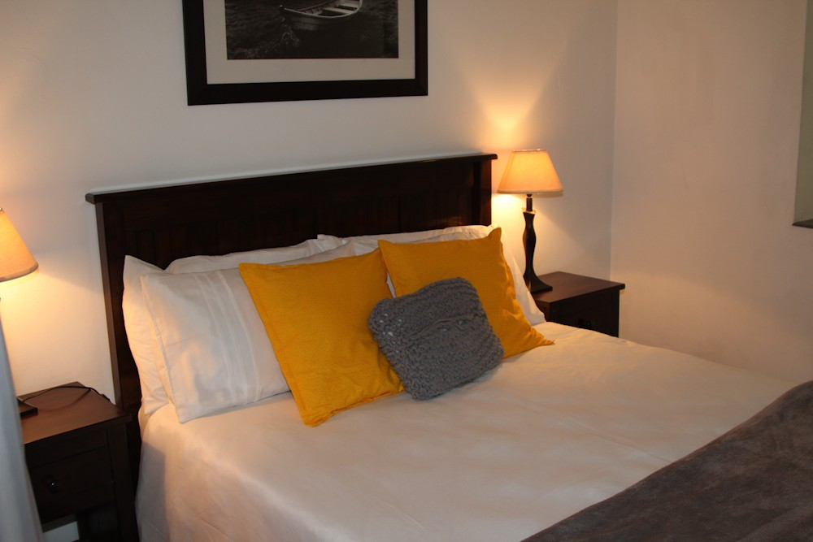

Our stay at Glen Garriff ladge was nothing short of perfect. The location was stunning, the room was incredibly comfortable and Wendy, the host, was so accommodating, friendly and lovely. Breakfast every morning was delicious. You could explore the grounds which was great, and there is no shortage of little tourist spots, small shops and restaurants within 10 minutes drive. I would highly recommend this B&B to anyone. Definitely a quiet getaway. We're hoping to back inside of this year!